Blind web platform
Revamping the web platform to make it usable and facilitate users in achieving their goals effortlessly.
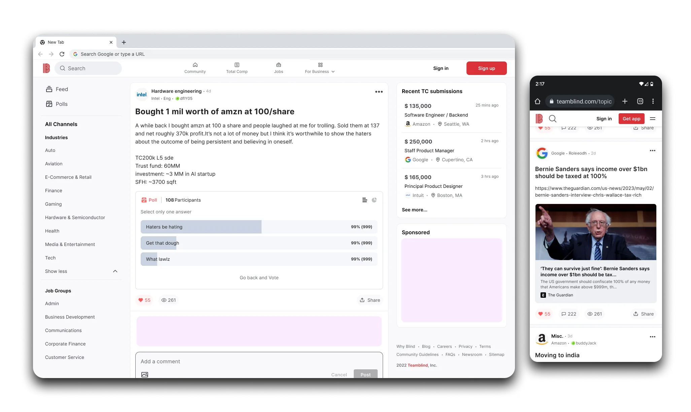
The problem
I joined Blind with a primary focus on a major consumer product, the website redesign, with a strong emphasis on improving the community aspect. The decline in monthly active users was a direct consequence of Google policy updates and subpar SEO standards. Compounding these challenges were the outdated web app technology stack, intrusive ads, repeated irrelevant content, and cumbersome UX/UI patterns that hindered content and information retrieval.
To further exacerbate the situation, users lacked access to new features available exclusively on the mobile app, resulting in their frustration. All these factors resulted in a substantial user loss, causing a considerable financial setback to the company.
The solution was evident: a comprehensive website redesign, integrating modern UX frameworks and technology stacks to fulfill both user and business requirements.
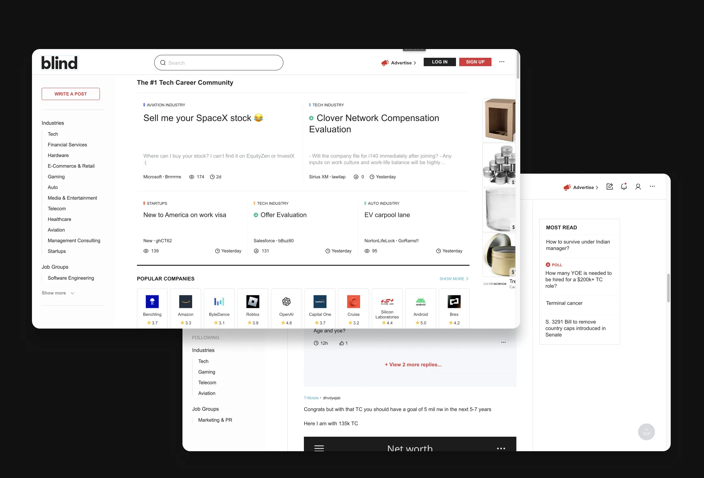
PAIN POINT 1
Outdated
Last updated in 2013, the Blind website appeared outdated, not in line with modern design trends, and visually unattractive to users.
PAIN POINT 2
Intrusive Ads
The ads on various pages loaded slowly and were placed in incorrect slots, causing confusion and disruptions in the user flow, especially on high-traffic pages.
PAIN POINT 3
Cluttered
Users found the website layout overwhelming and cluttered, especially when comparing it to competitors like Reddit, Levels.fyi and Fishbowl."
Case studies
I strategically divided the problem into two concise case studies, enabling a more manageable approach to problem-solving. Delve into the case studies for an in-depth exploration of our refined and detailed problem-solving process.
New design
In the initial phase, our primary focus was enhancing the most frequently visited pages of the website, which concurrently comprised the Minimum Viable Product (MVP).
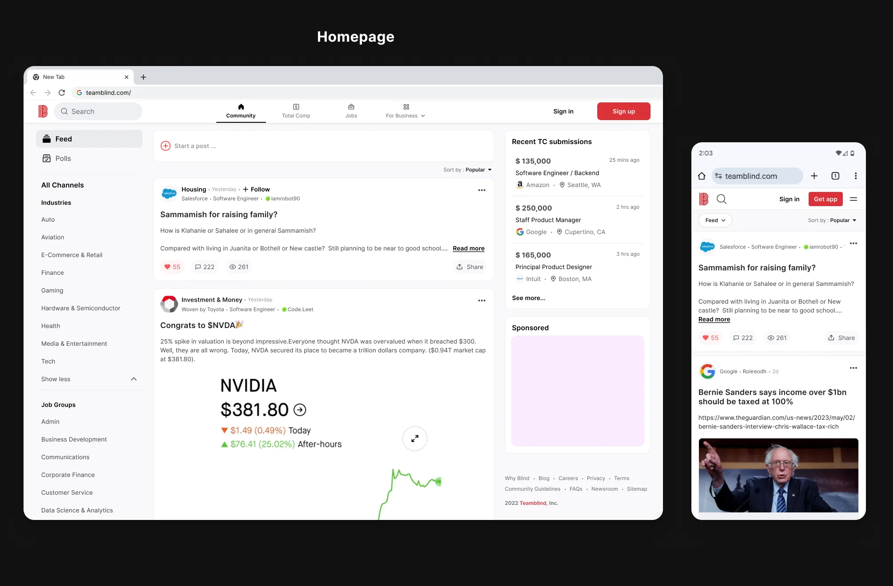
The improved version of the post page ensures a significantly smoother navigation experience, making it notably easier for users to locate relevant information.
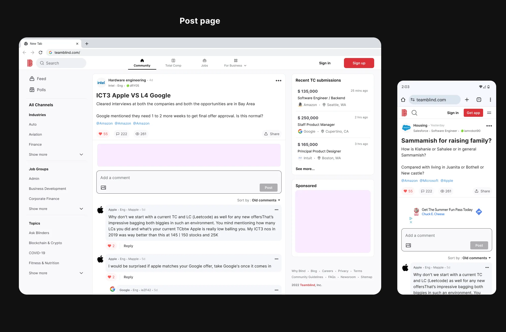
My role
As a Lead UX Designer, I conducted market research, user interviews, created a roadmap and product vision, developed conceptual designs for the MVP version, established a project timeline with the PM and Engineering Lead, conducted usability testing, created prototypes, and managed the design system for the web project.
I collaborated closely with the PM, COO, Design Manager, Korea Design Team, Data Analysts, and Web + Mobile Engineers at different phases of the project to ensure the seamless functioning of the team. I successfully delivered the final MVP deliverables, from concept to implementation, within 6 months. The project is scheduled to launch in December 2023.
Setting the foundation
In order to gain a deep understanding of user behavior and objectives, I initiated a competitive analysis to set user goals and benchmark standard UX patterns and collaborated with data analysts to uncover insights into core user flows, hotspots, bounce rates, and retention metrics.
Using this initial data, I identified three pivotal areas with high traffic - the homepage, post page, and browse pages - essential for achieving both user and business goals. In partnership with the Product Manager, we formulated a product roadmap and vision for the next two quarters, subject to review by leadership for feasibility. We then swiftly engaged with the engineering team to establish a plan for redesigning the two most critical sections of the website - the Homepage and Post page.
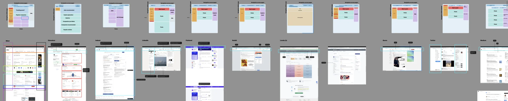
I conducted competitive analysis to gain insights into the products within the recruiting space. This exercise allowed me to establish best practices and benchmarks based on industry standards.
OPPORTUNITY STATEMENT
Users encounter frustration with the current website due to its outdated and cluttered interface, making it challenging to locate relevant information.
An opportunity exists to harness the existing design system to modernize the website, optimizing user-friendliness and enhancing the overall experience.
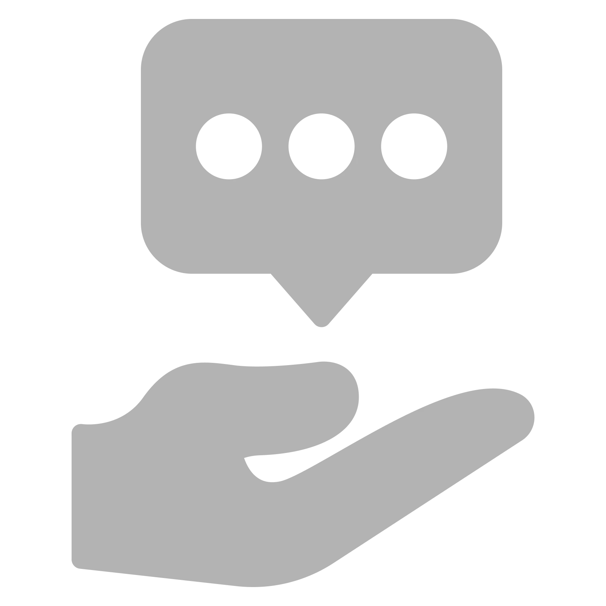
USER GOAL 1
Seek advice & support
Users may be looking for advice on work-related challenges, seeking support from their peers, or looking for mentorship opportunities.
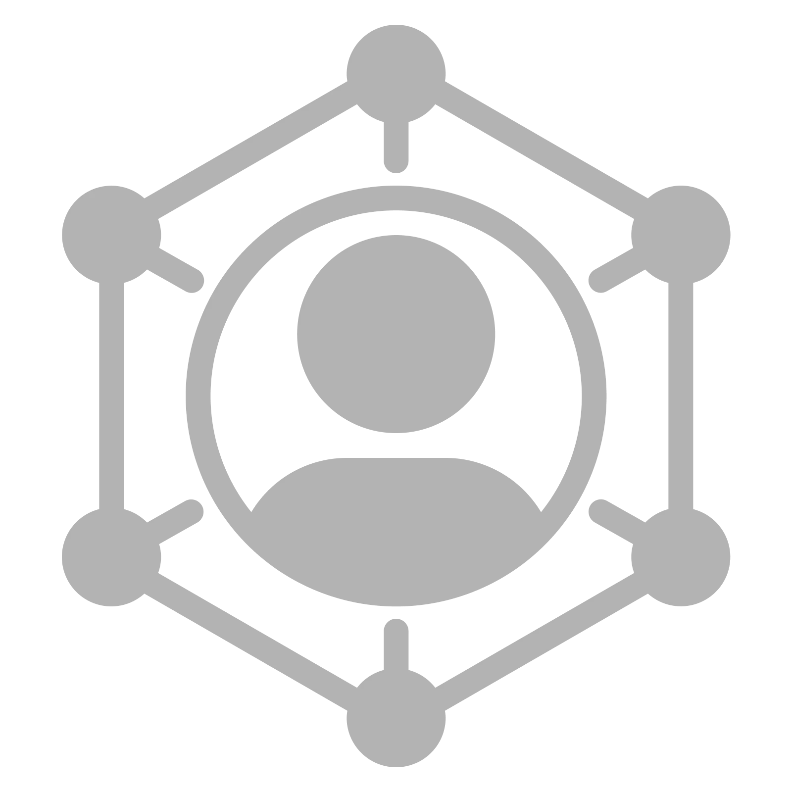
USER GOAL 2
Community engagement
Blind provides a community-driven platform that encourages users to participate in discussions and share their perspectives on various topics like hobbies, industry, etc.
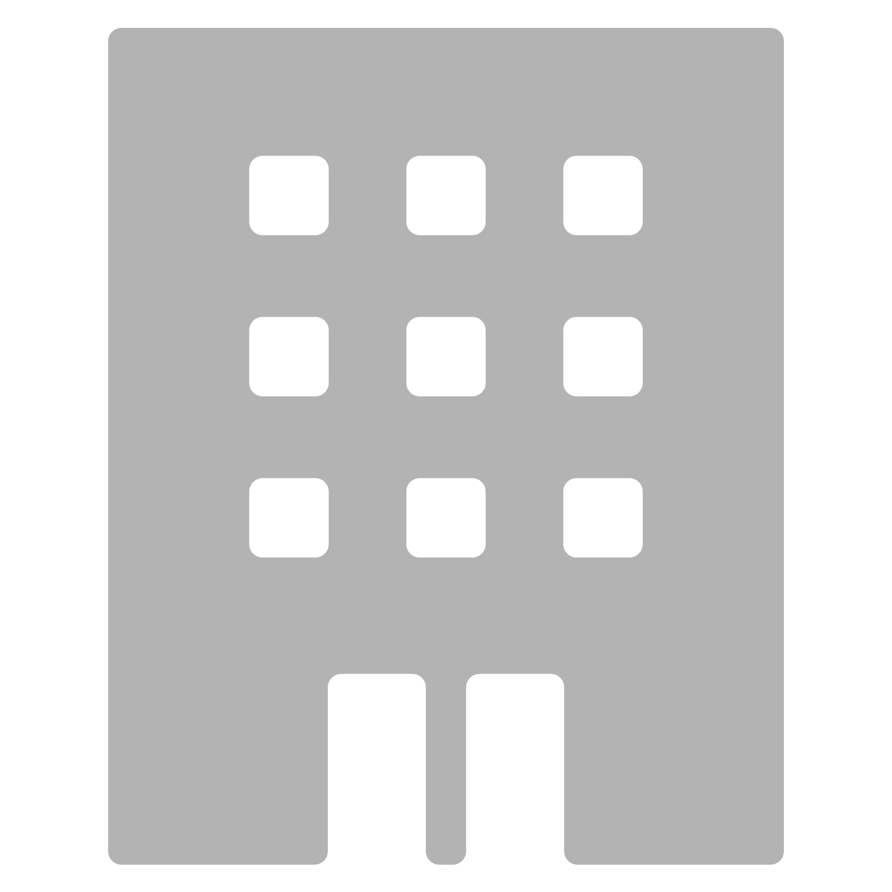
USER GOAL 3
Learn about company culture
Users may be interested in learning about the work culture and environment of specific companies, including employee satisfaction and experiences.
Design principles
After conducting user interviews and analyzing insights, I identified four key design principles that would shape the development of the new website, delivering intuitive, delighful and scalable experiences.
Simple & Intuitive
Strive for a clean and uncluttered design that simplifies the user experience.
Consistent & delightful
Maintain visual and functional consistency across the website and mobile app.
Scalability
Design with future growth and scalability in mind to accommodate additional features.
Heirarchy
Highlight important content and features to align with user and business goals.
Key screens - Mobile
In the first phase, our primary focus was on two key areas: the Homepage and the Post page. We planned to address static pages and other less used requirements in subsequent phases of the roadmap after gathering initial insights from internal users to ensure we were heading in the right direction.
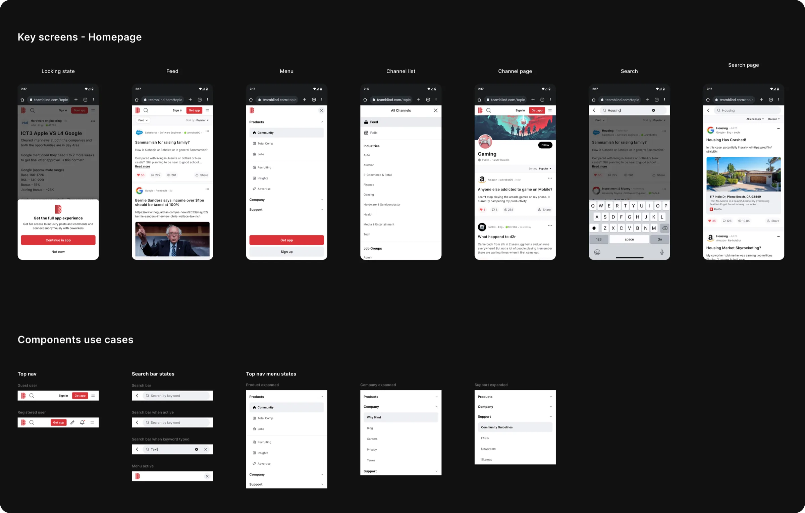
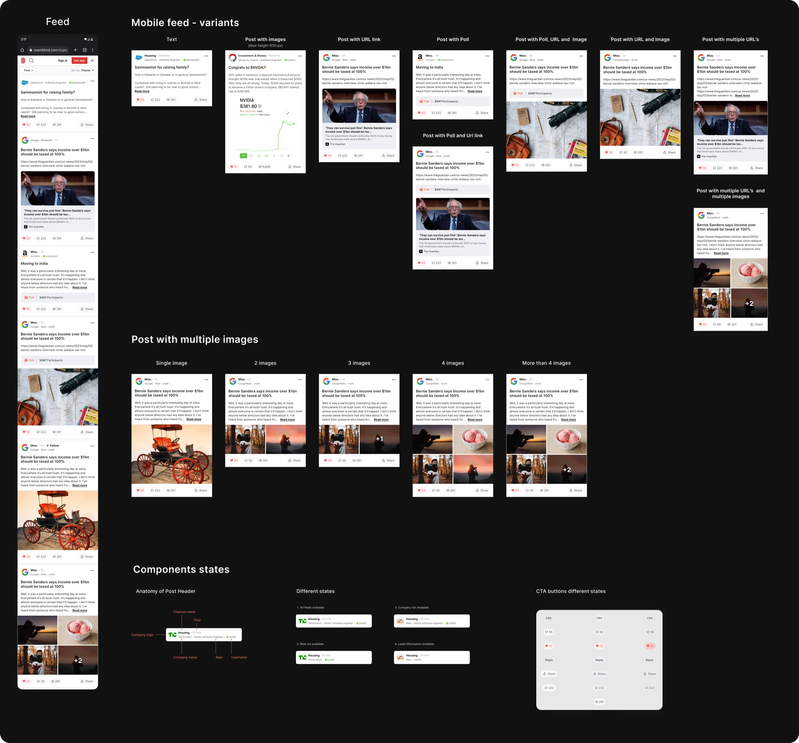
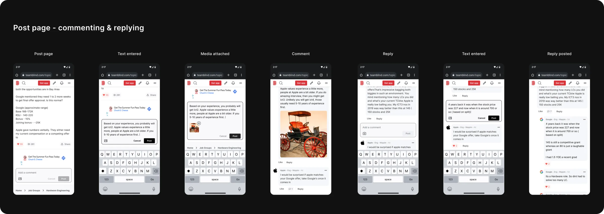
Key screens - Desktop
While focusing on optimizing the mobile web experience, I concurrently dedicated efforts to ensure the responsiveness of the layout across desktop devices. Collaborating with a data analyst, we gathered insights on the devices most commonly used by our users. This data-driven approach played a crucial role in making the website responsive and user-friendly across various platforms.
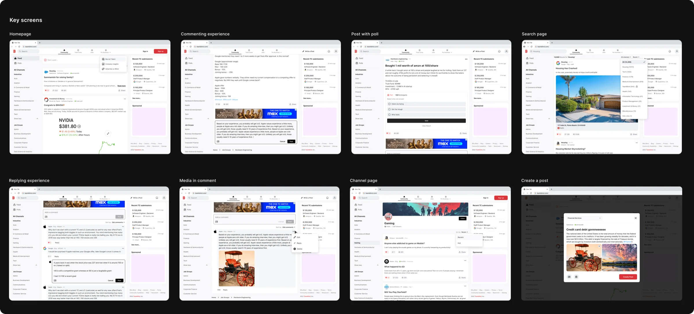
Final design - Desktop prototype
In the first phase, our primary focus was on two key areas: the Homepage and the Post page. We planned to address static pages and other less used requirements in subsequent phases of the roadmap after gathering initial insights from internal users to ensure we were heading in the right direction.
Final design - Mobile prototype
I worked concurrently on both web and mobile platforms to ensure a responsive user experience across all devices. Given that we already had a mobile app in place, our primary focus was on optimizing the mobile web experience. I dedicated my utmost effort to enhance mobile web usability without compromising the overall user experience, striving to make it as intuitive as possible.
Design system
Blind had a pre-existing design system tailored for the mobile app, but it lacked responsiveness for the website. Consequently, there was a requirement to expand the existing design system to accommodate additional states and components suitable for web usage. However, working within the constraints of the design system managed by the Korea team proved challenging.
To address this issue, I proactively took the initiative to develop a distinct web design system. I leveraged common design patterns from the mobile app system while introducing new components specifically tailored to web usage, ensuring a more seamless and efficient web design experience.
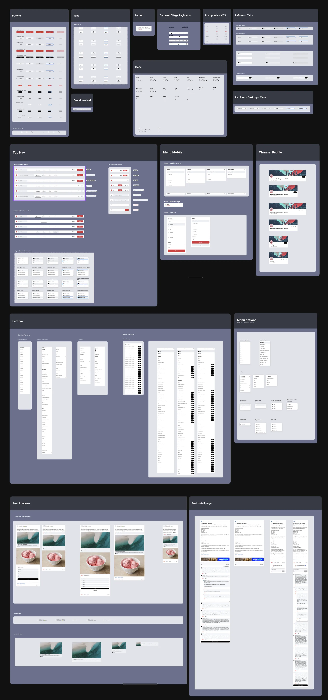
03
Deep dive case study - Homepage - WIP
Enhancing the user feed for a more engaging experience.
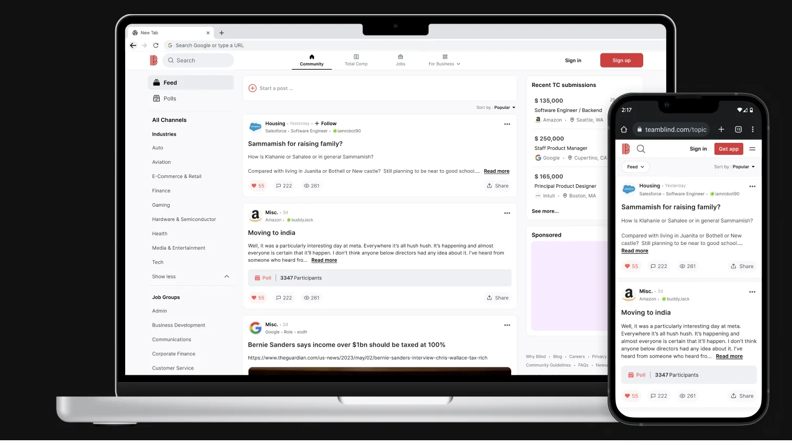